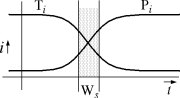
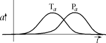
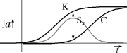
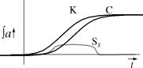
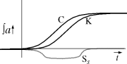
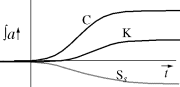

Phase Relationships in the
James Gosling
| |
|
| |
|  |
Toshi Doi of Sony describes the standardization process in terms of the
diagram at left. The i axis describes level of interest and the
t axis
describes time. Ti describes technical interest, and Pi describes political
interest. As time passes, technical activity declines as the technology
becomes understood. Similarly, generally fueled by economic pressures, the
political interest in a technology increases in some period.
For a standard to be usefully formed, the technology needs to be understood: technological interest needs to be waning. But if political interest in a standard becomes too large, the various parties have too much at stake in their own vested interest to be flexible enough to accommodate the unified view that a standard requires. In this model, Ws is the `window of standardization' where technical interest is waning (i.e. the technology has become understood), but the political situation hasn't become too hotly contested for constructive negotiating.
|
|  |
This model has many interesting insights, but there is more complexity
in the situation that can be explored. In the original model, the T and P
curves are open ended. The situation
is more like the diagram at left. These curves, Ta and Pa, represent
technical activity and political activity. In general, technical activity
precedes political activity.
Both types of activity go through phases of different intensity.
As these activities proceed, they produce
results. The result curves are the integrals of the activity curves.
|
|  |
The integrals of these two curves are drawn at left. The integral of
Ta is K
(knowledge) and the integral of Pa is C (calcification - revealing a strong
personal cynicism). Ss, the sensibility of standardization, is just K-C. The
optimum time for standardizing a technology is when Ss is at a maximum, which
will be in a region where knowledge is high, but calcification has not yet set
in.
A very interesting quantity to observe is the phase relationship between Ta and Pa. When the maximum point on Pa follows the maximum point on Ta by a sufficient distance, there is a wide Ss window. A sensible standard can be fairly easily set since the political activity which leads to the standard has the necessary technical knowledge in hand when needed. If Pa lags Ta sufficiently, Ss will have a long high flat top, which forms a convenient table on which to work.
|
|  |
Consider moving Pa left, closer to Ta. When it is close to Ta,
Ss will have a
shallow and flat region where the upward slope of Ta matches Pa approximately.
This region is the time of chaos. Before calcification builds up, there isn't
enough knowledge to do anything sensible, by the time that there is enough
knowledge, there's too much calcification to allow a sensible compromise to be
reached. In between, the region is flat enough that there isn't a clearly
defined optimum moment for developing a standard, so there is instead a drawn
out period of chaotic bargaining and soul searching.
|
|  |
Consider moving Pa even farther left, until it is to the right of
Ta. This is
the worst case: Ss is always negative. The long flat minimum region is the
time of panic where the political/economic process has decided that a
technology needs to be standardized, but no one understands it. Standards get
set by making random guesses that are not grounded in any technical reality,
but are instead grounded totally on political expedience.
|
|  |
The case described in the previous diagram is impossible in practice. The
very act of setting a standard inhibits technical activity, reducing the
Ta
curve and sharply flattening the K curve. Ss never rises to a positive level
of sensibility.
The sad truth about the computer industry these days is that it is this last case that is dominating a broad range of standards activities. Standards are regularly created and adopted before anyone has performed the experiments necessary to determine if they are sensible. Even worse, standards are getting accepted before they are even written, which is a truly ridiculous situation. How this arises is clear: standards are increasingly being viewed as competitive weapons rather than as technological stabilizers. Companies use standards as a way to inhibit their competition from developing advantageous technology. As soon as technical activity is observed by political/economic forces, their interest rises dramatically because they see a possible threat that must be countered before it gains strength. The result of this is a tremendous disservice to both users and consumers of technology. Users get poor quality technology, and because of the standards process, they're stuck with it. |